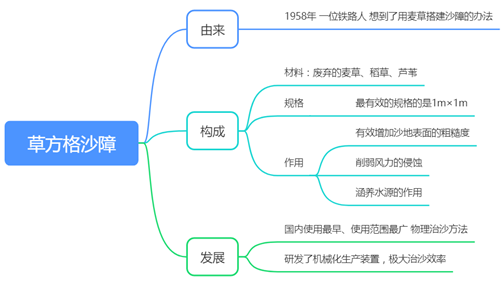

思维导图

文字资料
我国沙地沙漠生态修复治理取得显著成效
链接：https://www.gov.cn/xinwen/2020-09/27/content_5547426.htm小小麦草方格背后，有一批根扎沙漠的“铁军”(中国青年网)
链接：https://baijiahao.baidu.com/s?id=1714408016825386995&wfr=spider&for=pc全球连线｜治沙之变：从一个“草格子”到一套“好法子”
链接：https://baijiahao.baidu.com/s?id=1735877546312664305&wfr=spider&for=pc